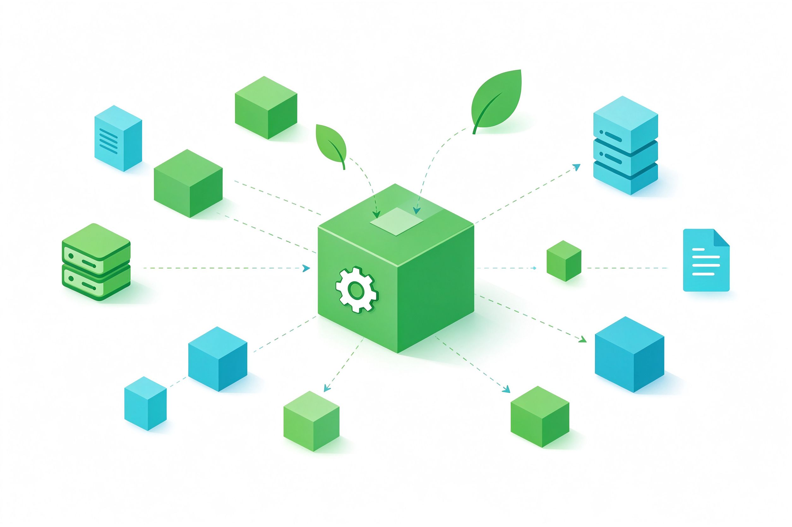

在看文件树之前，先理解 Spring Boot 赖以运转的四个机制。它们决定了"为什么文件要这样放、为什么代码不用写一堆配置"。
项目继承 spring-boot-starter-parent，由它统一裁定几千个依赖的兼容版本，所以引入 starter 时不用写版本号。
一个 starter 把实现某功能所需的全部 jar 一次性拉齐：webmvc 就包含内嵌 Tomcat、Spring MVC、Jackson 和日志。
根据 classpath 上有什么、你是否已自定义，自动按需创建并装配 Bean。你不写就用默认，你写了就听你的。
Spring 容器负责创建、管理对象（Bean）及其依赖关系。@Controller、@Service 等标注的类都会被扫描注册。
用 application.yml 区分 dev / prod 不同配置（如端口），通过 --spring.profiles.active 切换，一套代码多环境部署。
Tomcat 以 jar 形式内嵌在应用中，无需单独安装。java -jar 即可启动 Web 服务，部署只需一个文件。
这是本项目的真实结构（已排除 target 构建产物与 .git）。点击文件夹可折叠/展开，右侧灰色文字是每个文件的职责。
按"根目录 → 构建配置 → 主代码 → 资源 → 测试"的顺序，逐个讲清每个路径在系统中的职责与调用时机。
把前面所有文件"串"起来：当浏览器发出请求，各个文件里的组件按什么顺序被调用。
浏览器请求 http://localhost:8080/，内嵌 Tomcat 监听到该请求。
Tomcat 把请求交给 Spring MVC 的总前端控制器统一分发。
根据 @GetMapping("/") 找到 HelloController 的 hello() 方法。
调用目标方法，得到返回值（可继续调用 Service、读写数据库）。
@RestController 经 Jackson 转换结果，写回浏览器渲染显示。
这正是各文件协作的体现：pom.xml 把 Tomcat 和 Spring MVC 拉进 classpath → 自动配置启动 Tomcat、注册 DispatcherServlet → HelloController 被扫描注册并提供映射 → application.yml 决定端口。你只写了一个普通方法，其余全部自动完成。
项目如何被编译、打成可执行文件，以及如何用 Profile 在开发与生产环境间切换。

mvnw / mvnw.cmd 让项目自带指定版本 Maven，无需全局安装也能构建。
spring-boot-maven-plugin 把代码、依赖、内嵌 Tomcat 打进一个可执行 jar。
用 --- 分隔，spring.config.activate.on-profile 按环境激活不同配置。
加 --debug 可查看哪些自动配置生效、哪些未生效，是排障利器。